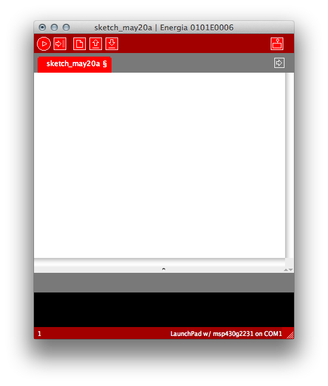
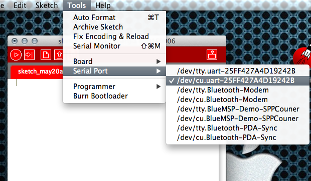
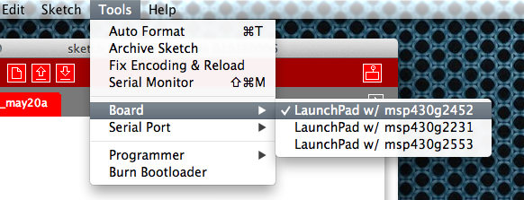
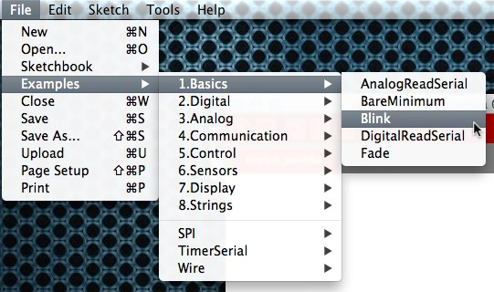
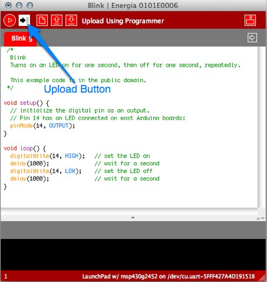

Need help? The Energia discussion forum is hosted on 43oh.com.
To use Energia you will need to have the LaunchPad drivers installed.
Linux support for Energia is more limited compared to Windows and Mac. Linux users will need to rely on the community and the forums to troubleshoot issues.
The most recent release of Energia can be downloaded from the download page.
Double click the energia-0101EXXXX-macosx.dmg file and drag the Energia application onto the Application folder.
Download and install Java for OS X from Apple.
On OS X 10.8, as Energia 0101E0009 isn't signed, proceed as follow:
The "damaged application" message is a cryptic reminder that Energia isn't signed and thus not truth-worthy according to Mountain Lion.
Proceed as follow:
Double click Energia.exe (Windows users) / Energia.app (Mac OS X users). Energia will start and an empty Sketch window will appear. 
Select Serial Port from the Tools menu to view the available serial ports. On windows, they will be listed as COMXXX port and usually a higher number is the LaunchPad com port. On Mac OS X they will be listed as /dev/cu.uart-XXXX. On Mac OS X make sure to select the /dev/cu.uart-XXXX and NOT the /dev/tty.uart-XXX

For more on configuring your Launchpad for serial communication, see Serial-Communication
To select the board or rather the msp430 in your LaunchPad, select Board from the Tools menu and choose the board that matched the msp430 in the LaunchPad.

To load the Blinky example into the editor, select Blink from the Blink from the File->Examples->1.Basics menu.

To compile and upload the Sketch to the LaunchPad click the Upload button.

If all is well then the green LED on your LaunchPad is happily blinking. Congratulations, you have uploaded your first Sketch. Energia includes many more examples to get you started with your electronic project. Need help? The Energia discussion forum is hosted on 43oh.com.
The text of the Energia getting started guide is licensed under a Creative Commons Attribution-ShareAlike 3.0 License. Energia reference is based on Arduino reference. Code samples in the guide are released into the public domain.